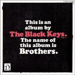
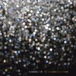

Music Reviews
-

Black Tusk Taste the Sin
Skynyrd, of all bands, would be proud of this "swamp metal" power trio from Georgia.Ryan Faughnder reviews... -
Big Boi Sir Lucious Left Foot: The Son of Chico Dusty
Big Boi's debut album is every bit as good as its title is long.
Andy Pareti reviews... -
M.I.A. /\/\/\Y/\
After seemingly spending most of the first half of 2010 embroiled in controversy, can provocateuse extraordinaire M.I.A. complete the hat-trick of stellar albums with /\/\/\Y/\?
Joe Rivers actually quite enjoyed typing out all those backslashes... -

The Black Keys Brothers
Back to basics for The Black Keys on the (nearly) Danger Mouse-less album, Brothers.
Andy Pareti finally gets to... -
CocoRosie Grey Oceans
Did you know that trance music makes fairies dance?
Sean Caldwell reviews... -

The Love Language Libraries
Raleigh native with an ear for fifties pop extends his bedroom project into an immense wall of sound.
Juan Edgardo Rodríguez reviews... -

Soundpool Mirrors In Your Eyes
Soundpool makes a shoegaze record for the dance floor. It sounds great, but does the album work as a whole?
Andrew Baer is an awful dancer... -

Laurie Anderson Homeland
If you're ready for it, it's here.
Alan Shulman reviews -
Bonnie 'Prince' Billy & The Cairo Gang The Wonder Show of the World
Bonnie 'Prince' Billy teams up with The Cairo Gang for his latest - another solid album of melancholy and sage-like eruditions.
Paul Fowler reviews... -
The Roots How I Got Over
Yep, it's another solid album from The Roots, I bet that didn't surprise you too much.
Luke Winkie thinks Joanna Newsom should show up on rap albums more often...